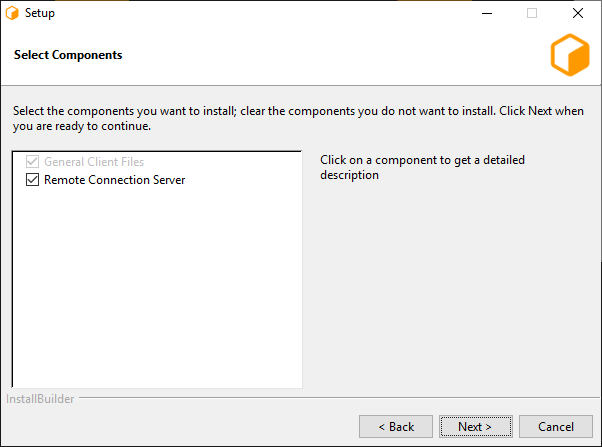
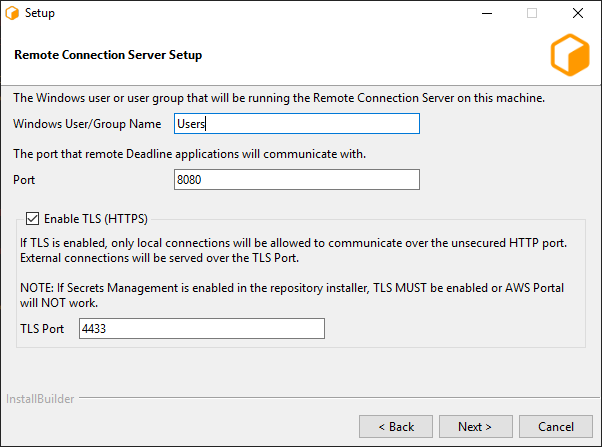
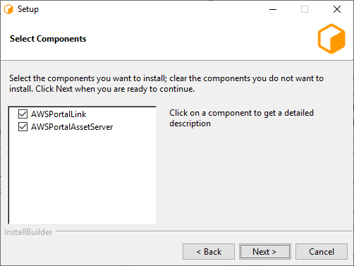
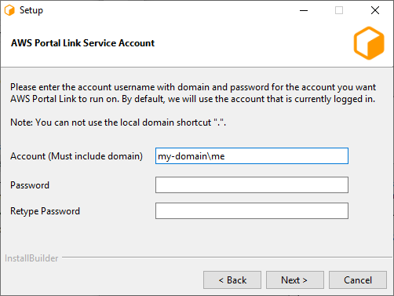
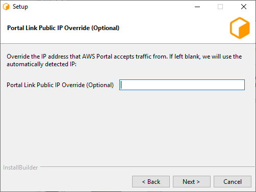
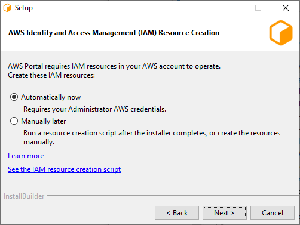
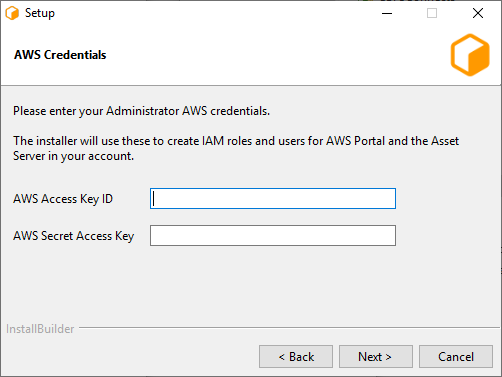
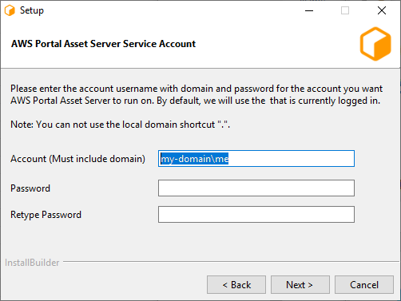
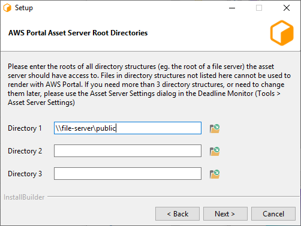

Note
While AWS Portal can enable cloud rendering in Deadline 10, AWS Deadline Cloud is a newer offering that has been built specifically for the cloud. It is a fully managed service that does not require installation or maintenance of infrastructure (e.g., repository, database, or license server). Worker fleet auto-scaling, asset synching, and licensing are all managed natively within AWS by Deadline Cloud. See here for more information on Deadline Cloud and its capabilities.
Installing AWS Portal Server¶
In this section, you will install the AWS Portal Server. The AWS Portal Server is used to communicate between your network and AWS. For more information, please see the AWS Portal Component Overview.
Prerequisites¶
Before starting this section, you should have:
Created IAM Admin User in your AWS account
Created IAM AWSPortal User in your AWS account
Choose a Machine to Run the AWS Portal Server¶
AWS Portal Server must be installed on a Windows or Linux machine that can see both your local file server and your Deadline repository. It should be installed only on a single machine within your network.
If you are installing AWS Portal Server on a Linux machine, we highly recommend that you Validate the Linux Installers.
AWS Portal should usually be installed on a machine that’s always on, and that’s always connected to the Internet. This is because the Deadline Workers that you launch on AWS can only process jobs when they are connected to the AWS Portal.
It’s possible to install AWS Portal on a machine that you shut down regularly, or that is not always connected to the Internet, such as a laptop. However, if the AWS Portal server shuts down, or if it loses its connection to the Internet, the Deadline Workers and infrastructure will continue to run, and you will be billed for them, but they will not be able to process any jobs.
Install the Deadline Client¶
You must install the Deadline Client on the machine that will run the AWS Portal, before installing AWS Portal.
The AWS Portal requires a running Deadline Remote Connection Server (RCS). It’s convenient to install the RCS on the same machine that will run the AWS Portal.
Installing the Deadline Remote Connection Server¶
The Deadline Remote Connection Server (RCS) is installed by the Deadline Client installer. The RCS must be installed on a machine that has access to your Deadline Repository, and the AWS Portal Server must be able to connect to the RCS.
Note that the installer includes an option that will make it easier for you to configure and run the RCS. This is enabled by checking ‘Remote Connection Server’ on the ‘Select Components’ page of the installer:

We recommend that you enable this option on the machine that you will use to run the RCS. On all platforms, this option will add a new Launcher menu item to start the Remote Connection Server. On Windows, this option will also add a namepace reservation for your Remote Connection Server.
Warning
If your Deadline Repository has Secrets Management Enabled, you MUST have TLS (HTTPS) enabled on your Remote Connection Server.
We will describe how to run the Remote Connection Server later.
Install AWS Portal¶
To install AWS Portal, run the AWS Portal Link installer (located with your Deadline installers):
On Windows:
AWSPortalLink-<VERSION>-windows-installer.exeOn Linux:
AWSPortalLink-<VERSION>-linux-x64-installer.run
Where <VERSION> is the version number of AWS Portal, for example, 10.0.0.
Proceed through the installer.
You will be asked to select which components to install: AWS Portal Asset Server or AWS Portal Link. It’s most convenient to install both on the same machine. However, if you would like to install them separately, you can select which one you would like to install here.

AWS Portal Link¶
While installing the AWS Portal Link component of AWS Portal:
On Windows, you will be prompted to choose your “AWS Portal Link Service Account”:
Enter the name of the account you wish to run the service in, and the account’s password. The account name must include the domain, in the form
domain\username. If you do not have a domain, use the name of your computer instead.Note
AWS Portal Link must be installed on an account that allows logging on as a service, and access to the Deadline repository. If you are running on a domain, talk to your domain administrator.
You will be prompted for your “Portal Link Public IP Override (Optional)”.
You should leave this empty, unless you have installed Portal Link before, and you know that the default value is incorrect.
AWS Portal Asset Server¶
While installing the AWS Portal Asset Server component of AWS Portal:
The installer will ask if you want to create the AWS Portal’s Identity and Access Management (IAM) Resources Automatically or Manually:
If you choose “Automatic”, the installer will prompt you for your Administrator IAM user credentials, and it will create the resources for you.
If you choose “Manual”, you can run a script to create the resources after the installer completes, or you can create the same resources manually.
If you chose to create IAM resources “Automatically”, then the installer will prompt you for your AWS credentials. Enter the keys that you saved during the IAM Admin user setup steps that you followed earlier.
Warning
On Linux these credentials are stored unencrypted, however, they will have their permissions set to 0600.
Per our shared responsibility model, we recommend you take additional steps to protect these credentials such as encrypting the hard drive of the machine which AWS Portal Asset Server is installed on.
On Windows, the installer will prompt you for “AWS Portal Asset Server Service Account”.
Enter the name of the account you wish to run the service in, and the account’s password. The account name must include the domain, in the form
domain\username. If you do not have a domain, use the name of your computer instead.Note
AWS Portal Asset Server must be installed on an account that allows logging on as a service, access to the Deadline repository, and access to your asset directories. If you are running on a domain, talk to your domain administrator.
The installer will prompt you for “AWS Portal Asset Server Root Directories”.
Select one or more directories for the Asset Server to access. Typically you would select the root directory of the filesystem that contains your asset files.
The asset server will be able to read assets from these directories, and write output files to them. Note that the asset server can also access sub-directores of the specified directory, so if you specify
\\fs-01\assets, then the asset server will also be able to access\\fs-01\assets\images.If you need more than three directories, or need to modify the directories later, you can do so in the Configure Asset Server dialog in the Deadline Monitor (Tools menu → Configure Asset Server).
Note
If you are installing on Windows, and your asset server uses a letter drive, please see Windows Mapped Drives and Custom Service Accounts.
Proceed through the installation until it’s done.
Next Step¶
After installing AWS Portal, you should start the Deadline Remote Connection Server.